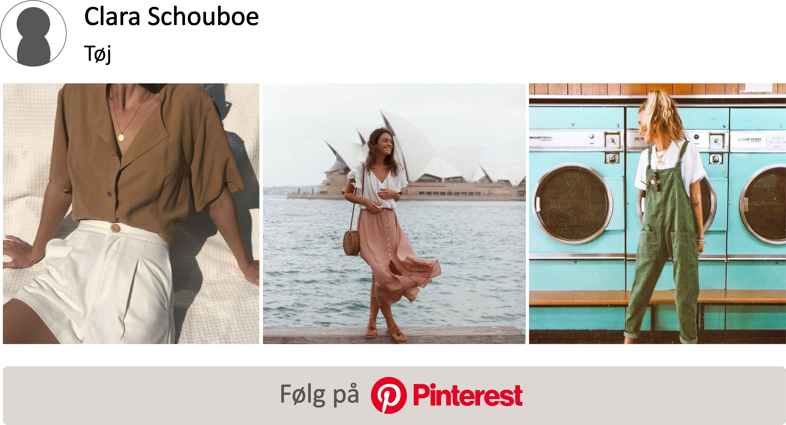
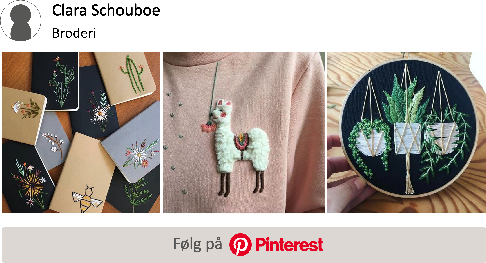
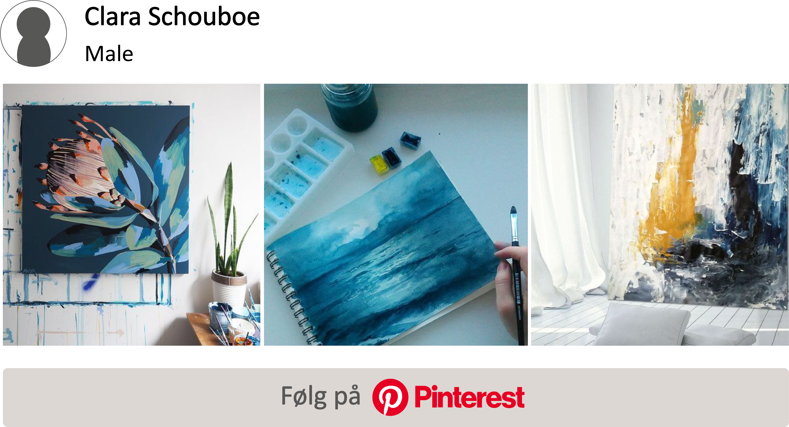
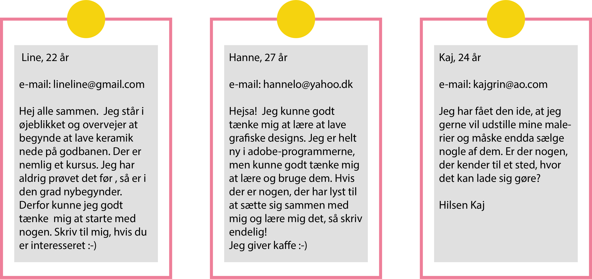

Hobbyer
Her under kan du finde:
Inspirerende historier
ASBJØRN
Asbjørn producerer møbler i sin fritid og er meget passioneret omkring træ. Han nyder at smutte en tur i værkstedet, og ser det som et frirum, hvor han bare kan være sig selv. Læs mere
MARIE
Marie syer selv tøj og andre modegenstande i sin fritid. Hun går meget op i, at kunne skabe et helt unikt look, som netop udtrykker hendes personlighed. Tøj er ikke blot noget funktionelt for Marie, men en udtryksform.Læs mere
SARAH
Sarah tegner og maler i sin fritid. For hende betyder det, at hun kan udfolde sine kreative evner, som kan bruges i mange sammenhænge. Sarah kan bruge timevis på at lave sine værker, men hun maler eller tegner lidt på dem i perioder, så det passer med studiet. Læs mere
Kreative hobbyer
Nogle gange kan det være svært at vide, hvor man skal finde inspiration, og hvad man skal gå i gang med. Der er her samlet en række forslag til kreative hobbyer, som man nemt kan komme til at dyrke. Der er ekstra inspiration i form af pinterest-boards også, så man kan få en ide om, hvad man præcis skal give sig i kast med.

Grafisk design (digitalt)
Grafisk design er en perfekt måde, at forbinde dine kunstneriske ideer med computerteknologien. Det kan være alt fra emballagedesign til plakater og andet kunst. Du kan gennem grafisk design både komme gennem en analog proces, såvel som at digitalisere dine ideer. Herunder finder du nogle ideer til inspirerende grafiske designs. Det kræver ingen skills, men kun din fantasi og en computer. Tryk på pinterest-boardet nedenfor, for at få inspiration til dit nye projekt

Syning
Syning er en kreativ hobby, der forbinder funktionalitet med æstetik og tiltaler derfor mange. I dette forslag, er der nemlig lagt størst vægt på inspirationen til at sy tøj, men kun fantasien sætter grænser for, hvad du kan sy. Syning er forholdsvis nemt at gå til. Det kræver blot adgang til en symaskine (det kan du også få på diverse kurser, samt på godbanen) Deruover er materialer som tråd og stof det eneste du skal bruge, for at komme igang. Se også events i Aarhus for mere info om muligheder for at påbegynde et nyt syprojekt i Aarhus. Tryk på pinterest-boardet nedenfor, for at få inspiration til dit nye projekt

Broderi
Broderi er en gammel kreativ beskæftigelse, som i de senere år igen har sneget sig ind i modeindustrien. Derfor er mange ikke blot begyndt at købe beklædningsgenstande med broderi, men det er også blevet meget populært at give sig i kast med det selv. Denne ide til en hobby, kræver ikke nogle store maskiner eller en skærm, men blot en broderiring, tråd, nål og et lærred af det foretrukne stof. Lav et projekt med dette for enten, at lave et kunstværk eller at gøre din kedelige sweater eller taske lidt mere spændende med et helt unikt design. Tryk på pinterest-boardet nedenfor, for at få inspiration til dit nye projekt

Male
At male er endnu en hobby, som ikke kræver det vilde udstyr. Det kræver dog en smule plads, hvor du kan dække af. Derudover er materialer som lærred, pensler og maling let tilgængeligt og kan også fås til billige priser. Der findes et hav af forskellige malemetoder der ude, og der er ikke en type maling eller en type strøj, der er MÅDEN at gøre det på. Du kan evt starte ud med et abstrakt maleri, hvor fokus er på sammensætning af farver. Tryk på pinterest-boardet nedenfor, for at få inspiration til dit nye projekt
Opslagstavle
Dette er en oplagstavle, hvor du kan slå opslag op og se andres opslag omkring kreative hobbyer. Her kan man finde en makker, man kan dyrke sine kreative interesser med eller spørge nogle til råds omkring nogle kreative aktiviteter. Du er velkommen til at skrive lige hvad, du har på hjerte

Her kan du skrive dit eget opslag:
Events
-
SYKURSUS //
Maj-hold: 6., 13. og 20. maj eller Juni-hold: 3., 10. og 17. juni // Skolen for Kunst og Design, Godsbanen Læs mere her -
GRAFISK TRYK //
6. april og 7. april - 13 timer // Skolen for Kunst og Design, Klosterport Læs mere her -
GALLERIE PARNASSE "Vi Elsker Ler" //
23. marts -11. april // Rosengade 22 - Baghuset Læs mere her -
FERNISERING - FRAVÆRkstedet og andre dystopier //
20. marts kl. 19.30-21.00 // Dokk1 - Ungeområdet Læs mere her -
DIY STOFPOSE //
30. marts// Dokk1 - Tweenslab Læs mere her -
FIGURTEGNING //
31. marts// Dokk1 - U1 Læs mere her -
LAV ET TAPASBRÆT //
4. april// Godsbanen Læs mere her
Inspiration i Aarhus
Det er vigtigt at få inspiration, for at kunne skabe. Nogle finder det i byrummet og andre i små brugsgenstande eller hverdagssituationer. Én ting er sikkert - Aarhus er den perfekte by til at skabe inspiration til kreative sjæle. Det er uanset hvilket medie man udtrykker sig gennem, så kan vi på hver vores måde blive inspireret. Derfor er der sammensat billedserien her under fra Aarhus
Billedserie : Aarhus Havn
Om
Her under kan du finde:
Koncept
Det er så vigtigt at finde sit eget lille frirum, hvor man føler sig tilpas og 100 procent kan være sig selv. Dette magasin vil fremvise forskellige kreative mennesker, som i deres fritid fordyber sig i deres passion og fotælle, hvad det betyder for dem. Min mission er gennem disse historier og gennem et hav af inspirationer, at inspirerer flere mennesker til at dyrke kreative aktiviteter.
Jeg mener også, at vi lever i et samfund, hvor vi konstant tvinges til at tage nogle store betydningsfulde valg, som er afgørende for vores fremtid. Samtidig er vi omgivet af al verdens stressfaktorer, så jeg søger at vise folk, som tvivler på deres valg og går med lidt stress i maven, at der er en måde at skabe et fortrøstningsfuldt frirum på.
Bladet er til, for at skabe inspiration og oplyse om det hav af forskellige interesser, der findes der ude. Det er til for at binde folk sammen omkring nysgerrighed og interesse, og ikke skabe nogle barrierer mellem folk.
Kontakt
// SMIL v/ Clara Hellerøe Schouboe //
// Skanderborgvej 3, 5. th, 2 //
// tlf: 42 15 37 34 //
// email: cschouboe@gmail.com //